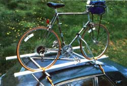
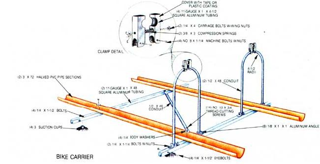

If you look forward to riding - but dread hauling - your bicycle, you'll like this' easy-to-build rack.
To the avid bicyclist, pedaling-to just about anywhere-is a way of life. But even those among us who may be on the verge of sprouting a crank set and wheels have an occasional yearning to strap the ol' velo to the family bus and take off in search of some new cycling territory.
Unfortunately, cartop bike carriers-especially the high-tech, multifunction models-are all but obscenely priced . . . while the less expensive bumper- or trunk-mounted versions tend, by design, to expose their cargo to more than a fair share of road and street-parking hazards which, at worst, could turn straight frames and trued wheels into a cruel form of modern sculpture.
Strangely enough, considering their cost, the super-duper roof racks aren't all that complicated. In fact, they so closely resemble conventional drip-rail-mounted utility bars (appropriately equipped with V-trough channel and hinged support struts) that research staffer Dennis Burkholder decided to attempt his own low-budget rendition of the high-buck hauler, using readily available materials.
And as you can see in the accompanying photo, his efforts were successful both in form and in function. The carrier's main framing members are just two 4' lengths of 1" square aluminum tubing furnished with suction-cup feet and sturdy eyebolts. These bars are secured to the roof's drip rails with straps and gutter hooks (we were able to locate a readymade kit at a discount auto supply store).
To cradle and support bike tires of whatever dimension, Dennis sliced a 6' piece of 3" Schedule 40 PVC pipe lengthwise and fastened each half-concave surface up-to the top of the square framing bars, using metal-cutting screws. To allow room for two bikes to stand side by side (and to make the frame of a size to fit snug on nearly any auto top), he spaced the pipe sections 30" apart and centered the aluminum bars 37" from each other. A 46" -long 1/2" conduit-run on the diagonal and screwed to the frame-keeps the assembly square.
The folding support struts consist of 1/2" X 48" lengths of conduit, each bent into an elongated U and attached to what will be the rear framing bar with 1" sections of 1/8" aluminum angle. The down-tube clamps are made from 4-1/2" sections of 1" square aluminum tubing cut to match the contour of the struts to which they're attached and the down tube of a bike frame. A spring-loaded carriage bolt run through each pair of clamps assures a positive grip, and-to prevent scratches and abrasion-Dennis covered the jaws with a plastic-dip coating. (Duct or electrical tape would be a cheapo alternative.)
Once the rack is hooked to the car roof-support struts to the rear-securing the bicycles is a cinch: The wheels are laid in the plastic troughs (fronts facing rearward), and then the struts can be swung up so the padded clamps can hold each bike's down tube. With that done, each wheel is strapped in place. Unless you have an exceptionally heavy machine, installing and removing a bike should be no problem ... and even sudden stops will tend to draw the bikes down against the cradles rather than lever them upward. Best of all, your "ride" will be safe from any street-level mishaps ... and you can enjoy your jaunt without spending a fortune.
|
 |
 |
|